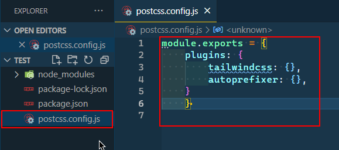
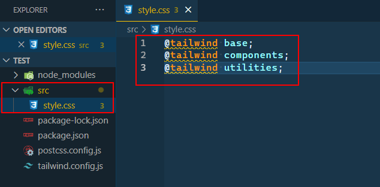
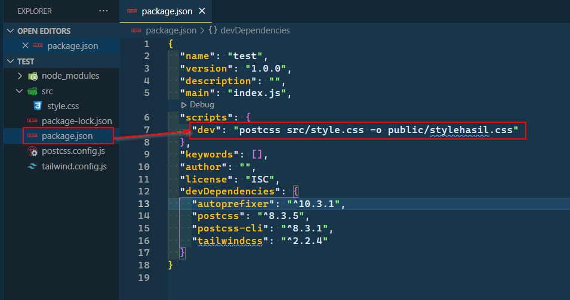

Cara Konfigurasi Tailwind CSS
Senin, 12 Juli 2021
Intro
Artikel ini gua buat sebagai catatan dan reminder gua dikemudian hari, dan juga sharing kepada teman - teman.
Apa itu Tailwind?
Tailwind adalah CSS framework yang digunakan untuk mempermudah kita dalam styling website. Tailwind termasuk utility-based framework, berbeda dengan Bootstrap yang merupakan component-based framework. Apa bedanya? Bedanya, Bootstrap udah punya sebuah class yang sudah jadi(distyle), kemudian class tersebut bisa llangsung dipakai di setiap elemnt HTML. Contohnya kita ingin membuat tombol berwarna biru dengan Bootstrap, kita hanya perlu mengetikkan
<button class="btn btn-primary">
ini button dengan Bootstrap
</button>
Berbeda dengan Tailwind kita harus menuliskannya satu satu, Tailwind hanya menyingkat property CSS kita
<button class="p-2 bg-blue-600 text-white rounded-md">
ini button dengan Tailwind
</button>
Gua lebih suka pakai tailwind karena lebih fleksibel dalam stylingnya. Tapi ga selamanya gua pake Tailwind, ada kalanya gua pakai Bootstrap yaitu ketika gua pengen cepet selesai.
Gimana cara konfigurasi Tailwind?
Pastikan Node.js sudah trinstall di pc kita. Jika belum install Node.js terlebih dahulu. Selanjutnya buka command prompt atau bisa juga pakai terminal yang ada di dalam vscode. Pastikan kita berada di direktori project. Ketikkan
npm init -y
Kemudian kita perlu install tailwindcss, postcss, autoprefixer dan postcss-cli.
npm install -D tailwindcss@latest postcss@latest autoprefixer@latest postcss-cli
Setelah itu, kita perlu membuat file postcss.config.js di root project kita dan menambahkan 'tailwindcss' dan 'autoprefixer' ke PostCSS konfigurasi kita. Dengan meng-copykan code dibawah ini
module.exports = {
plugins: {
tailwindcss: {},
autoprefixer: {},
}
}

Kemudian kita membuat file tailwind.config.js untuk mengkustomisasi dan ini sangat diperlukan. Kita bisa meembuat file ini secara otomatis dengan mengetikkan perintah berikut di terminal
npx tailwindcss init
Itu akan membuat file tailwind.config.js yang isinya
module.exports = {
purge: [],
darkMode: false, // or 'media' or 'class'
theme: {
extend: {},
},
variants: {},
plugins: [],
}
Kita perlu membuat folder src di root project dan mengisi folder tersebut dengan file style.css dan memasukkan code berikut kedalam file style.css (nama file bebas bisa di sesuaikan)
@tailwind base;
@tailwind components;
@tailwind utilities;

Sebelum bisa digunakan kita perlu menambahkan script di package.json sebagai perintah untuk mengcompile file css kita dengan cara menambahkan script berikut,
"dev": "postcss src/style.css -o public/stylehasil.css"

src/style.css adalah styling dari tailwin yang belum dicokmpile
-o adalah output
public/stylehasil.css adalah tempat output hasil compile
kalian bebas dalam penamaan dan letak.
Jadi deh tailwind siap digunakan. Ketika kamu ingin mengcompile, kamu cukup menjalankan perintah berikut di terminal
npm run dev
File dan folder akan otomatis dibuat.